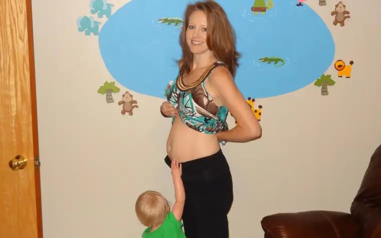
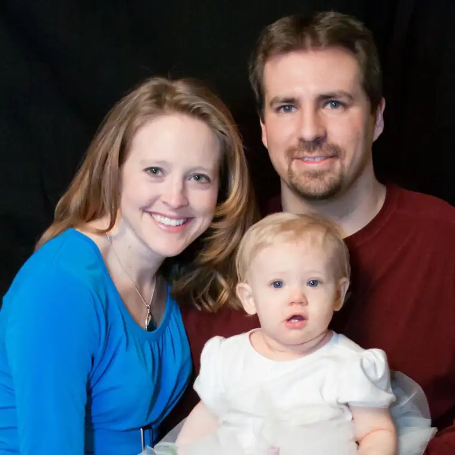
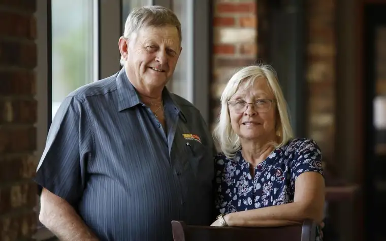

COLFAX, N.D. — The receipt for the camera Allison Deutscher had purchased at WalMart only days before sat on her kitchen counter, a reminder to her parents of their great loss.
When they finally found the courage to develop the photos — visuals tucked inside a 35 mm roll that had remained intact in Deutscher’s vehicle despite a severe crash and human casualties — they didn’t know what they’d find. Four images emerged, including one of Allison, 36, the fourth child of six in the combined families of Lynn and Donna Mickelson, pulling up her shirt to reveal her belly as her daughter, Brielle, 18 months, touches her tiny sibling through her mother’s skin.

Just four days after the photos were taken, all were dead, along with Allison’s husband, Aaron, the result of an early evening accident on July 6, 2012, just outside Jamestown, N.D., on Interstate 94. The drunk driver whose vehicle hit theirs head-on had stopped at a rest area, gotten turned around and, upon exiting, started traveling the opposite way. All five were killed instantly.

“If you ever travel out to Bismarck,” Lynn says, “you’ll see the teddy bear or flowers around milepost 225,” marking where they died.
Harry Clark, Allison’s high school basketball and track coach, was in “total shock” to learn what had happened. “At first I just heard about the accident, and that bothered me, but when I found out who it was, it was unbelievable.”
He describes Allison as “a fierce competitor” and “very coachable.”
“She had great attitude, and just a special place in my heart,” he says. Clark was a pallbearer at the funeral.
“It was probably the saddest day of my life. Witnessing Allie and Brielle in the same coffin was almost too much to take,” he says. “It was devastating.”
Lynn says he misses his “kids” every day, with the anniversary month of the crash each July being especially difficult. “Not only the 6th, but the 15th was Aaron’s birthday and the 25th was their wedding anniversary; they’d only been married two and a half years.”
Despite his grief, Lynn says he’s never been angry at God. “When I look at it, our paths are laid out ahead of time. It was part of a master plan. We didn’t have any say in it, and maybe it’s the way the Father would want us to learn part of life.”
This wasn’t the family’s first tragedy. Lynn’s first wife, Allison’s birth mother, struggled with mental illness and twice attempted suicide in a moving vehicle with her three children in the car, Lynn says. Eventually, she did take her own life when Allison was 10.
Prior to that, the couple had divorced and each had remarried. Lynn’s second wife, Donna, adopted his three children and raised them as her own with her two, and their sixth, born from their marriage. It was through a Befrienders faith-based support group for the divorced and widowed that they met, and where Lynn says he learned how to heal.
“It opened my eyes, my soul, you might say,” he says. “It was a cleansing feeling.”
Without that, he might not have sought out the family of the driver responsible for his dear ones’ deaths, but about four years ago, his wish to meet them finally happened.
“None of us knew how it was going to go. We were a little apprehensive at first,” Lynn says. As they readied to shake hands, he stopped them and said, “That ain’t gonna do it. You need a hug.”
The four spent several hours talking, laughing, crying and telling stories, he says. “We realized they’re no different than us. They lost their son, plus they have to hear all the negative stuff and look at the reminders in the papers… they were hurting as bad, if not worse, than we were.”
Through her faith, Donna says, she knows God loves us, even when we make mistakes. “He forgives, and we need to forgive and show love in as many ways as we can.”
But it’s the signs they believe they’ve received from above that have, perhaps, brought the fullest healing. First was the rainbow that appeared the night of the crash, a “beautiful evening with bright blue sky — perfect weather,” Lynn says. It was captured on camera by a couple heading east who saw the aftermath, and later wrote to the Mickelsons. Alongside the photo, they wrote: “We want you to know… your kids went to heaven on a rainbow.”
Later, the Mickelsons learned a professional photographer from Bismarck on her way to photograph a wedding —also a first responder — had arrived on scene. “She stopped to see if she could render aid,” Lynn says, noting that she’d taken Brielle out of her car seat to administer CPR. “But everyone was already gone.” As she was leaving, “she saw this big, double rainbow” and took a picture with her phone.
Another time, they were traveling west and the trailer carrying the crash vehicle, used now to educate people on the dangers of drinking and driving, happened to pass by the couple the very moment they’d reached the milestone marker where their kids were killed.
“It was at that precise timing. Unbelievable,” Lynn says, adding, “To me, that was a message from Allison.”
And there was that cold October day when Donna noticed a batch of daisies — Allison’s favorite flower — in full bloom in their yard amid others frozen nearby. And the mailbox Allison had given her father that was spared a fall from an old, nearby cottonwood.
Though some will see these signs as mere coincidence, Donna says the separation between this life and the next is thinner than we realize.
“There is the veil, but that veil is thin. And there is a presence that you can feel and experience, but you have to have faith,” she says.

“I miss my daughter, but you know what? I miss my granddaughter even more,” Lynn says. “I had 36 years with my daughter, and only 18 months with Brielle. The whole event has made me look at life a lot differently. I don’t know what’s going to happen five minutes from now… it really makes you think.”
[For the sake of having a repository for my newspaper columns and articles, I reprint them here, with permission, a week after their run date. The preceding ran in The Forum newspaper on July 12, 2019.]